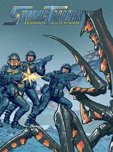
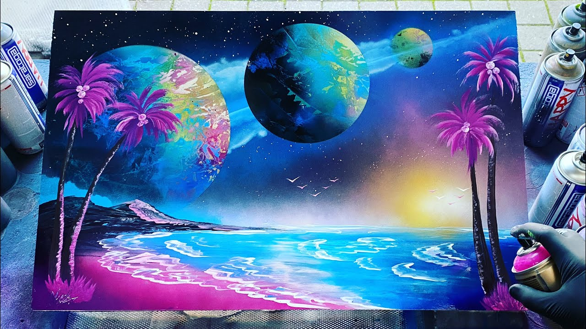

Bio
I am Jared Whittaker. I have worked in warehouses for 10ish years.
I have been an avid computer gamer for most of my life and enjoy coding on the side.
I am familiar with some of the basics of HTML but have never touched Javascript.
My goal is to complete this program as quickly as possible while staying on the Deans list.

Come on, you apes! You wanta live forever?
—Unknown platoon sergeant, 1918
I always get the shakes before a drop. I’ve had the injections, of course, and hypnotic preparation,
and it stands to reason that I can’t really be afraid.
The ship’s psychiatrist has checked my brain waves
and asked me silly questions while I was asleep
and he tells me that it isn’t fear, it isn’t anything important—it’s
just like the trembling of an eager race horse in the starting gate.
Starship Troopers -Robert A. Heinlein
My schools
- Dighton Rehoboth
- BCC
- NEIT

Hobbies
- Spray paint art
- Computer Gaming
- Geocaching 